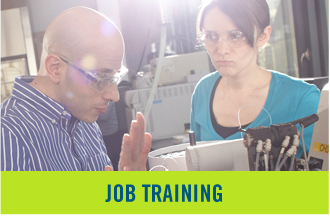
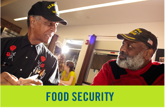

At Robin Hood, we have a unique approach to fighting poverty. Using our research-driven metrics, we’re
able to judge the social impact of a given charity on impoverished New Yorkers and direct funding to where
it will do the greatest good.
This Metrics Calculator will let you experience evaluating the impact of a poverty-fighting program.
Click on one of the impact areas below to get started.
|  |  |
Now that we know how Robin Hood would approach evaluating the various ways the Manhattan Nursing Aide Career Center benefits poor New Yorkers,
let’s actually get some numbers. Below are fields for each of the factors in our metrics equations above. Fill them in with any values you
like and the corresponding social impact will be calculated and shown here.
Some factors are greyed out, with default values already filled in. These factors are usually constant across different grantees. Robin Hood
estimates the average annual earnings of high-school graduates with no further education that begin the year unemployed as $11,200, for
example, and we treat a two-bedroom apartment as always costing about $16,840 in rent.
Breakdown:
|
$123,456 |
|
$123,456 |
Metrics factors:
Figuring out the positive impact of a potential grantee is, unfortunately, only half of the equation. When
selecting which programs to fund, we also need to weigh their cost. Our ideal nonprofit does a lot with a little.
Another key factor comes into play here to help us only “take credit” for outcomes actually attributable to Robin
Hood. We call it the Robin Hood Factor, and it estimates what proportion of a given grantee’s activities are actually
due to our funding. If a charity uses their $100,000 budget to hand out 100,000 free meals and we gave them $20,000,
we only take credit for 20,000 meals - one-fifth, our share - not the full 100,000.
The Robin Hood Factor can still be 100% when we fund less than 100% of the program’s budget, however. This happens
when our funding is necessary for the program to take place or have an impact - qualifying for matching funding or
government grants is a common example.
Fill in the Manhattan Nursing Aide Career Center’s estimated funding requirements (from Robin Hood) and the Robin Hood
Factor and we’ll combine them with the estimated benefits from above to determine the ratio of expected, Robin
Hood-attributable benefits to Robin Hood cost. This benefit-cost ratio, the final link in the chain, is a big part
(but only a part) in whether we decide to fund an applicant grantee.
| How much funding would the program require? | |
| What’s the estimated Robin Hood Factor? |